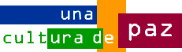

Organización Mundial del Movimiento Scout



 ¿Qué es una Cultura de Paz?
¿Qué es una Cultura de Paz?
Unidades scouts, descubrid los ocho Tesoros de una Cultura de Paz que pueden cambiar el mundo.
¿Por qué relacionamos medios de comunicación y una Cultura de Paz? ¿Cómo influyen los medios de comunicación en ti y en tu sociedad?
¿Cómo podemos usarlos para construir una cultura de paz?